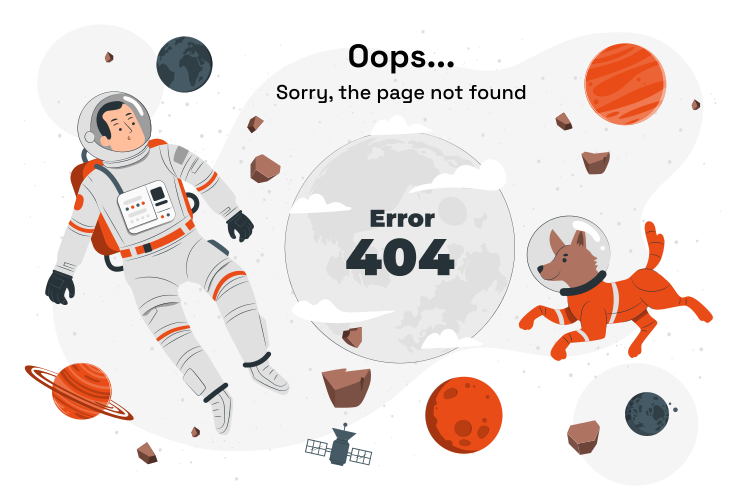

<div class="container mr-2 ml-2">
    <div class="grid align-content-center justify-content-center">
        <div class="col-12 text-center">
            <div>
                
            </div>
            <p-button class="btn-secondary" [routerLink]="['/home']" routerLinkActive="router-link-active"
                label="Back to Home" severity="secondary" />
        </div>
    </div>
</div>